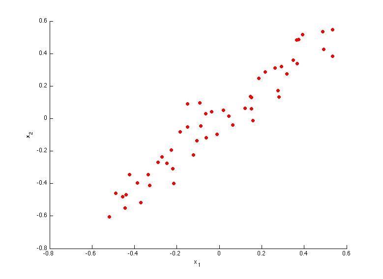

Which of the following figures correspond to possible values that PCA may return for
select the vectors that go in the "long" direction of the data, ie bottom left to top right
Which of the following is a reasonable way to select the number of principal components
(Recall that nnn is the dimensionality of the input data and
[ ] Choose the value of
[ ] Choose
[ ] Choose
[x] Choose
Suppose someone tells you that they ran PCA in such a way that "95% of the variance was retained." What is an equivalent statement to this?
answer below
Which of the following statements are true? Check all that apply.
[x] Given an input maybe wording is not 100%, and we can also get z in R^n
[ ] Feature scaling is not useful for PCA, since the eigenvector calculation (such as using Octave's svd(Sigma) routine) takes care of this automatically. always apply prior to svd
[x] If the input features are on very different scales, it is a good idea to perform feature scaling before applying PCA.
[ ] PCA can be used only to reduce the dimensionality of data by 1 (such as 3D to 2D, or 2D to 1D)
Which of the following are recommended applications of PCA? Select all that apply.
[ ] Data visualization: To take 2D data, and find a different way of plotting it in 2D (using k=2). fuck i misread it is already 2d...
[x] Data compression: Reduce the dimension of your input data
[x] Data compression: Reduce the dimension of your data, so that it takes up less memory / disk space.
[ ] As a replacement for (or alternative to) linear regression: For most learning applications, PCA and linear regression give substantially similar results. 1 point